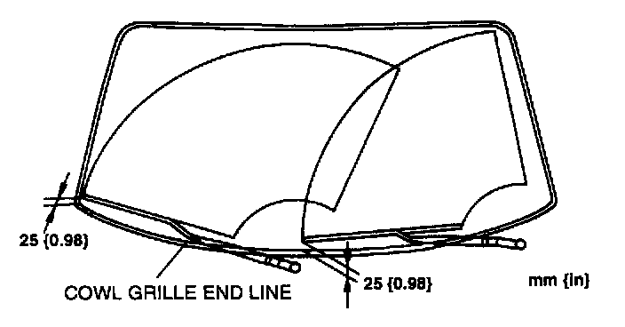

Operation CHARM
: Car repair manuals for everyone.
Home
>>
Mazda
>>
1999
>>
MX-5 Miata L4-1.8L DOHC
>>
Repair and Diagnosis
>>
Wiper and Washer Systems
>>
Wiper Arm
>>
Adjustments
Wiper Arm: Adjustments
WINDSHIELD WIPER ARM AND BLADE ADJUSTMENT
1.
Operate the windshield wiper motor to set the windshield wipers in the park position.

2.
Set the windshield wiper arm height as shown.